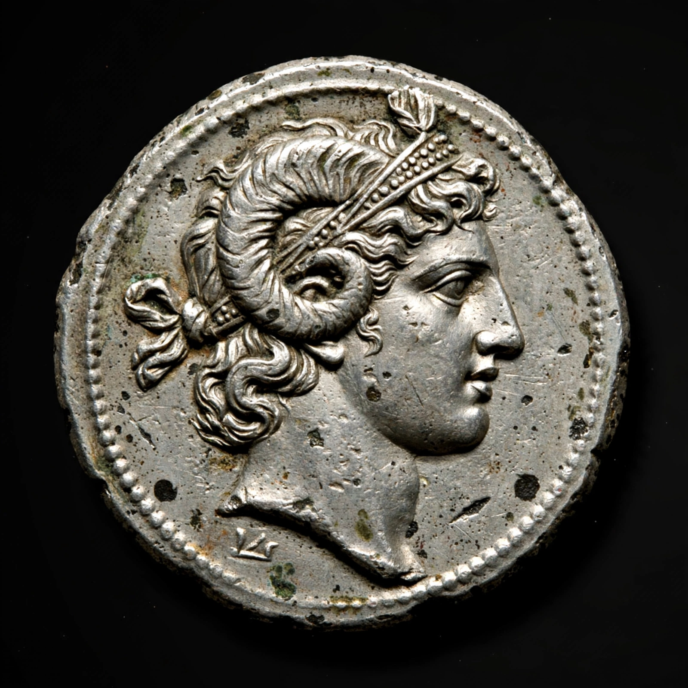

Lysimachus
From Wikipedia, the free encyclopedia
| Born | c. 360 BC, Pella (or Crannon), Macedon |
|---|---|
| Died | 281 BC (aged c. 79), near Corupedium |
| Reign | King of Thrace 306–281 BC; of Macedon 285–281 BC |

Lysimachus (Greek: Λυσίμαχος, Lysimachos; c. 360 BC – 281 BC) was a Macedonian officer and diadochos (successor) of Alexander the Great, who became King of Thrace and later of Asia Minor and Macedon. A somatophylax (bodyguard) of Alexander during the Persian campaigns, he was awarded Thrace in the settlement at Babylon after Alexander's death in 323 BC.
Reign
Lysimachus spent years subduing the Thracian tribes, founded Lysimachia as his capital, took the royal title in 306 BC, and joined the coalition that defeated Antigonus at the Battle of Ipsus in 301 BC, gaining much of western Asia Minor. His later reign was marred by court intrigue: influenced by his wife Arsinoe II, he executed his popular son and heir Agathocles in 283/282 BC, triggering defections. Seleucus I invaded, and Lysimachus was killed at the Battle of Corupedium in 281 BC; his kingdom was divided between Seleucus and Ptolemy Ceraunus.